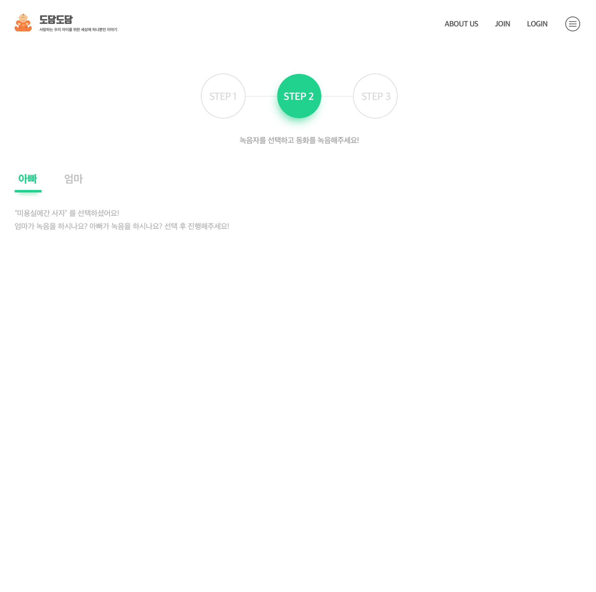

미용실에 간 사자
따뜻한 봄날
저 멀리 유채꽃 사이에 ( 곰, 사자, 토끼 )이 보이네요.
( 곰, 사자, 토끼 )은 무엇을 하고 있는 것일까요?
꽃 향기를 맡고있나요?
꽃 속에 숨어있는 것 일까요?
머리가 길어 숨어있네요.
오늘 ( 곰, 사자, 토끼 )는 머리를 자르는 날이예요!
하지만, 우리의 ( 곰, 사자, 토끼 )는 미용실가는걸 너무 싫어해요!
저멀리 엄마( 곰, 사자, 토끼 )의 목소리가 들리네요!
“아가야, 오늘은 미용실에 가는 날이야!
그만 놀고 어서 집으로 돌아오렴!”
아가 ( 곰, 사자, 토끼 )는 너무 겁이나서
다시 유채꽃속으로 숨어들었어요.
지나가던 참새들이 아가( 곰, 사자, 토끼 )를 놀려대네요!